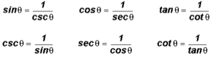
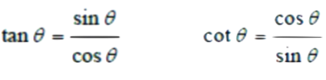

Introduction
-
What is a Trig Identity:
An identity in math is something that always hold true, for instance x = x. A trigonometric identity is an identity that includes the trigonometric functions such as sine, cosine and tangent.
Sometimes you will asked to prove an identity and they might not always be valid. In this case the left side of the equation does not equal the right side.
Identities
-
Reciprocal Identities:
 -
Quotient Idenity:
 -
Pythagorean Identity:
Compund Angle Formulas
-
Formulas:
How to Prove Identities
-
Steps to Proving Simple Trigonometric Identities
1. Simplify one side at a time (start with the more complicated side)
2. Express csc(x), sec(x), cot(x), and tan(x) in terms of sin(x) and cos(x)
3. Simplify using common denominators of factoring as necessary
4. when a sin2(x) or cos2(x) appears use a pythagorean identity to simplify